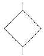
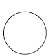
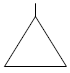
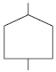
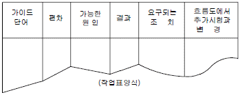
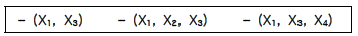
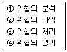
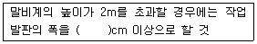

산업안전산업기사 (2013-06-02 기출문제)
1과목: 산업안전관리론
1. 다음 중 산업안전보건법령상 안전검사 대상 유해ㆍ위험 기계가 아닌 것은?
- 선반
- 리프트
- 압력용기
- 곤돌라
(정답률: 82%)

2. 하인리히의 재해손실비용 평가방식에서 총재해손실비용을 직접비와 간접비로 구분하였을 때 그 비율로 옳은 것은? (단, 순서는 직접비 : 간접비 이다.)
- 1 : 4
- 4 : 1
- 3 : 2
- 2 : 3
(정답률: 91%)
3. 다음 중 보호구 의무안전인증기준에 있어 방독마스크에 관한 용어의 설명으로 틀린 것은?
- “파과”란 대응하는 가스에 대하여 정화통 내부의 흡착제가 포화상태가 되어 흡착능력을 상실한 상태를 말한다.
- “파과곡선”이란 파과시간과 유해물질의 종류에 대한 관계를 나타낸 곡선을 말한다.
- “겸용 방독마스크”란 방독마스크(복합용 포함)의 성능에 방진마스크의 성능이 포함된 방독마스크를 말한다.
- “전면형 방독마스크”란 유해물질 등으로부터 안면부 전체(입, 코, 눈)를 덮을 수 있는 구조의 방독마스크를 말한다.
(정답률: 71%)
4. 인간의 착각현상 중 버스나 전동차의 움직임으로 인하여 자신이 승차하고 있는 정지된 자가용이 움직이는 것 같은 느낌을 받거나 구름 사이의 달 관찰시 구름이 움직일 때 구름은 정지되어 있고, 달이 움직이는 것처럼 느껴지는 현상을 무엇이라 하는가?
- 자동운동
- 유도운동
- 가현운동
- 플리커현상
(정답률: 81%)
5. 다음 중 “학습지도의 원리”에서 학습자가 지니고 있는 각자의 요구와 능력 등에 알맞은 학습활동의 기회를 마련해 주어야 한다는 원리는?
- 자기활동의 원리
- 개별화의 원리
- 사회화의 원리
- 통합의 원리
(정답률: 78%)
6. 다음 중 테크니컬 스킬즈(technical skills)에 관한 설명으로 옳은 것은?
- 모럴(morale)을 앙양시키는 능력
- 인간을 사물에게 적응시키는 능력
- 사물을 인간에게 유리하게 처리하는 능력
- 인간과 인간의 의사소통을 원활히 처리하는 능력
(정답률: 78%)
7. 다음 중 산업안전보건법령상 안전ㆍ보건표지에 있어 경고 표지의 종류에 해당하지 않는 것은?
- 방사성물질 경고
- 급성독성물질 경고
- 차량통행 경고
- 레이저광선 경고
(정답률: 82%)
8. 다음 중 연간 총근로시간 합계 100만 시간당 재해발생 건수를 나타내는 재해율은?
- 연천인율
- 도수율
- 강도율
- 종합재해지수
(정답률: 76%)
9. 다음 중 피로의 직접적인 원인과 가장 거리가 먼 것은?
- 작업 환경
- 작업 속도
- 작업 태도
- 작업 적성
(정답률: 70%)
10. 다음 중 인간의 욕구를 5단계로 구분한 이론을 발표한 사람은?
- 허츠버그(Herzberg)
- 하인리히(Heinrich)
- 매슬로우(Maslow)
- 맥그리거(McGregor)
(정답률: 84%)
11. 다음 중 STOP 기법의 설명으로 옳은 것은?
- 교육훈련의 평가방법으로 활용된다.
- 일용직 근로자의 안전교육 추진방법이다.
- 경영층의 대표적인 위험예지 훈련방법이다.
- 관리감독자의 안전관찰 훈련으로 현장에서 주로 실시 한다.
(정답률: 67%)
12. 안전교육의 방법 중 프로그램 학습법(programmed self - instruction method)에 관한 설명으로 틀린 것은?
- 개발비가 적게 들어 쉽게 적용할 수 있다.
- 수업의 모든 단계에서 적용이 가능하다.
- 한 번 개발된 프로그램 자료는 개조하기 어렵다.
- 수강자들이 학습이 가능한 시간대의 폭이 넓다.
(정답률: 68%)
13. 버드(Bird)의 재해발생 비율에서 물적손해 만의 사고가 120건 발생하면 상해도 손해도 없는 사고는 몇 건 정도 발생하겠는가?
- 600건
- 1200건
- 1800건
- 2400건
(정답률: 53%)
14. 모랄 서베이(Morale survey)의 주요 방법 중 태도 조사법에 해당하는 것은?
- 사례연구법
- 관찰법
- 실험연구법
- 문답법
(정답률: 71%)
15. 다음 중 무재해 운동의 기본 이념 3원칙과 거리가 먼 것은?
- 무의 원칙
- 자주활동의 원칙
- 참가의 원칙
- 선취 해결의 원칙
(정답률: 82%)
16. 인간의 안전교육 형태에서 행위나 난이도가 점차적으로 높아지는 순서를 옳게 표시한 것은?
- 지식 → 태도변형 → 개인행위 → 집단행위
- 태도변형 → 지식 → 집단행위 → 개인행위
- 개인행위 → 태도변형 → 집단행위 → 지식
- 개인행위 → 집단행위 → 지식 → 태도변형
(정답률: 83%)
17. 다음 중 상해 종류에 대한 설명으로 옳은 것은?
- 찰과상 : 창, 칼 등에 베인 상해
- 창상 : 스치거나 문질러서 피부가 벗겨진 상해
- 자상 : 칼날 등 날카로운 물건에 찔린 상해
- 좌상 : 국부의 혈액순환의 이상으로 몸이 퉁퉁 부어오르는 상해
(정답률: 84%)
18. 다음 중 안전교육의 단계에 있어 안전한 마음가짐을 몸에 익히는 심리적인 교육방법을 무엇이라 하는가?
- 지식교육
- 실습교육
- 태도교육
- 기능교육
(정답률: 86%)
19. 다음 중 산업안전보건법령상 사업 내 안전ㆍ보건교육의 교육과정에 해당하지 않는 것은?
- 검사원 정기점검교육
- 특별안전ㆍ보건교육
- 근로자 정기안전ㆍ보건교육
- 작업내용 변경 시의 교육
(정답률: 82%)
20. 다음 중 산업안전보건법령상 안전보건 총괄책임자 지정 대상사업으로 상시근로자 50명 이상 사업의 종류에 해당하는 것은?(관련 규정 개정전 문제로 여기서는 기존 정답인 4번을 누르면 정답 처리됩니다. 자세한 내용은 해설을 참고하세요.)
- 서적, 잡지 및 기타 인쇄물 출판업
- 음악 및 기타 오디오물 출판업
- 금속 및 비금속 원료 재생업
- 선박 및 보트건조업
(정답률: 85%)
2과목: 인간공학 및 시스템안전공학
21. FT도에 사용되는 기호 중 통상사상을 나타낸 것은?




(정답률: 75%)
22. 다음 중 한 자극 차원에서의 절대 식별 수에 있어 순음의 경우 평균 식별 수는 어느 정도 되는가?
- 1
- 5
- 9
- 13
(정답률: 69%)
23. 다음 중 소음의 크기에 대한 설명으로 틀린 것은?
- 저주파 음은 고주파 음만큼 크게 들리지 않는다.
- 사람의 귀는 모든 주파수의 음에 동일하게 반응한다.
- 크기가 같아지려면 저주파 음은 고주파 음보다 강해야 한다.
- 일반적으로 낮은 주파수(100Hz 이하)에 덜 민감하고, 높은 주파수에 더 민감하다.
(정답률: 83%)
24. 다음 중 시력 및 조명에 관한 설명으로 옳은 것은?
- 표적 물체가 움직이거나 관측자가 움직이면 시력의 역치는 증가한다.
- 필터를 부착한 VDT화면에 표시된 글자의 밝기는 줄어들지만 대비는 증가한다.
- 대비는 표적 물체 표면에 도달하는 조도와 결과하는 광도와의 차이를 나타낸다.
- 관측자의 시야 내에 있는 주시영역과 그 주변 영역의 조도의 비를 조도비라고 한다.
(정답률: 55%)
25. 다음 중 통제기기의 변위를 20mm 움직였을 때 표시기기의 지침이 25mm 움직였다면 이 기기의 C/R비는 얼마인가?
- 0.3
- 0.4
- 0.8
- 0.9
(정답률: 77%)
26. 다음 중 제조나 생산과정에서의 품질관리 미비로 생기는 고장으로, 점검작업이나 시운전으로 예방할 수 있는 고장은?
- 초기고장
- 마모고장
- 우발고장
- 평상고장
(정답률: 79%)
27. 인간계측자료를 응용하여 제품을 설계하고자 할 때 다음 중 제품과 적용기준으로 가장 적절하지 않은 것은?
- 출입문 - 최대 집단치 설계기준
- 안내 데스크 - 평균치 설계기준
- 선반 높이 - 최대 집단치 설계기준
- 공구 - 평균치 설계기준
(정답률: 82%)
28. 다음 중 인간-기계시스템의 설계 단계를 6단계로 구분 할 때 제3단계인 기본설계단계에 속하지 않는 것은?
- 직무 분석
- 기능의 할당
- 인터페이스 설계
- 인간 성능 요건 명세
(정답률: 51%)
29. 다음은 위험분석기법 중 어떠한 기법에 사용되는 양식인가?

- ETA
- THERP
- FMEA
- HAZOP
(정답률: 55%)
30. 작업종료 후에도 체내에 쌓인 젖산을 제거하기 위하여 추가로 요구되는 산소량을 무엇이라 하는가?
- ATP
- 에너지대사율
- 산소 빚
- 산소최대섭취능
(정답률: 61%)
31. 부품 배치의 원칙 중 부품의 일반적인 위치를 결정하기 위한 기준으로 가장 적합한 것은?
- 중요성의 원칙, 사용 빈도의 원칙
- 기능별 배치의 원칙, 사용 순서의 원칙
- 중요성의 원칙, 사용 순서의 원칙
- 사용 빈도의 원칙, 사용 순서의 원칙
(정답률: 60%)
32. FT도에 의한 컷셋(cut sets)이 다음과 같이 구해졌을때 최소 컷셋(minimal cut set)으로 옳은 것은?

- (X1, X3)
- (X1, X2, X3)
- (X1, X3, X4)
- (X1, X2, X3, X4)
(정답률: 80%)
33. 인지 및 인식의 오류를 예방하기 위해 목표와 관련하여 작동을 계획해야 하는데 특수하고 친숙하지 않은 상황에서 발생하며, 부적절한 분석이나 의사결정을 잘못하여 발생하는 오류는?
- 기능에 기초한 행동(Skill-based Behavior)
- 규칙에 기초한 행동(Rule-based Behavior)
- 지식에 기초한 행동(Knowledge-based Behavior)
- 사고에 기초한 행동(Accident-based Behavior)
(정답률: 69%)
34. 다음 중 FTA의 기대효과로 볼 수 없는 것은?
- 사고 원인 규명의 간편화
- 사고 원인분석의 정량화
- 시스템의 결함 진단
- 사고 결과의 분석
(정답률: 43%)
35. 다음 중 광도(luminous intensity)의 단위에 해당하는 것은?
- cd
- fc
- nit
- lux
(정답률: 64%)
36. [보기]와 같은 위험관리의 단계를 순서대로 올바르게 나열한 것은?

- ① → ② → ④ → ③
- ② → ③ → ① → ④
- ① → ③ → ② → ④
- ② → ① → ④ → ③
(정답률: 70%)
37. 건구온도 38℃, 습구온도 32℃ 일 때의 Oxford 지수는 몇 ℃ 인가?
- 30.2℃
- 32.9℃
- 35.0℃
- 37.1℃
(정답률: 64%)
38. 시스템의 수명주기를 구상, 정의, 개발, 생산, 운전의 5단계로 구분할 때 다음 중 시스템 안전성 위험분석(SSHA)은 어느 단계에서 수행되는 것이 가장 적합한가?
- 구상(concept) 단계
- 운전(deployment) 단계
- 생산(production) 단계
- 정의(definition) 단계
(정답률: 42%)
39. 다음 중 인간공학의 직접적인 목적과 가장 거리가 먼 것은?
- 기계조작의 능률성
- 인간의 능력개발
- 사고의 미연 및 방지
- 작업환경의 쾌적성
(정답률: 55%)
40. 통신에서 잡음 중의 일부를 제거하기 위해 필터(filter)를 사용하였다면 이는 다음 중 어느 것의 성능을 향상 시키는 것인가?
- 신호의 검출성
- 신호의 양립성
- 신호의 산란성
- 신호의 표준성
(정답률: 82%)
3과목: 기계위험방지기술
41. 다음 중 연삭기의 사용상 안전대책으로 적절하지 않은 것은?
- 방호장치로 덮개를 설치한다.
- 숫돌 교체 후 1분 정도 시운전을 실시한다.
- 숫돌의 최고사용회전속도를 초과하여 사용하지 않는다.
- 축 회전속도(rpm)는 영구히 지워지지 않도록 표시한다.
(정답률: 83%)
42. 다음 중 기계의 회전 운동하는 부분과 고정부 사이에 위험이 형성되는 위험점으로 예를 들어 연삭 숫돌과 작업받침대, 교반기의 날개와 하우스 등에서 발생되는 위험점은?
- 물림점(nip point)
- 끼임점(shear point)
- 절단점(uting point)
- 접선물림점(tangential point)
(정답률: 79%)
43. 롤러 작업에서 울(guard)의 적절한 위치까지의 거리가 40mm 일 때 울의 개구부와의 설치 간격은 얼마 정도로 하여야 하는가? (단, 국제노동기구의 규정을 따른다.)
- 12mm
- 15mm
- 18mm
- 20mm
(정답률: 60%)
44. 다음 중 산업용 로봇을 운전하는 경우 산업안전보건법에 따라 설치하여야 하는 방호장치에 해당되는 것은?
- 출입문 도어록
- 안전매트 및 방책
- 광전자식 방호장치
- 과부하방지장치
(정답률: 72%)
45. 다음 중 밀링 작업시 안전조치 사항으로 틀린 것은?
- 절삭속도는 재료에 따라 정한다.
- 절삭 중 칩제거는 칩브레이커로 한다.
- 커터를 끼울 때는 아버를 깨끗이 닦는다.
- 일감을 고정하거나 풀어낼 때는 기계를 정지시킨다.
(정답률: 82%)
46. 다음 중 프레스 및 전단기의 양수조작식 방호장치의 누름버튼의 상호간 최소 내측거리로 옳은 것은?
- 100mm
- 150mm
- 300mm
- 500mm
(정답률: 82%)
47. 와이어로프의 절단하중이 1116kgf이고, 한 줄로 물건을 매달고자 할 때 안전계수를 6 으로 하면 몇 kgf 이하의 물건을 매달 수 있는가?
- 186
- 372
- 588
- 6696
(정답률: 78%)
48. 크레인 작업시 와이어로프 등이 훅으로부터 벗겨지는 것을 방지하기 위한 장치를 무엇이라 하는가?
- 권과방지장치
- 과부하방지장치
- 해지장치
- 브레이크장치
(정답률: 73%)
49. 다음 중 드릴 작업의 안전 대책과 거리가 먼 것은?
- 칩은 와이어 브러쉬로 제거한다.
- 구멍 끝 작업에서는 절삭압력을 주어서는 안 된다.
- 칩에 의한 자상을 방지하기 위해 면장갑을 착용한다.
- 바이스 등을 사용하여 작업 중 공작물의 유동을 방지한다.
(정답률: 84%)
50. 다음 중 프레스기에 사용하는 광전자식 방호장치의 단점으로 틀린 것은?
- 연속 운전작업에는 사용할 수 없다.
- 확동클러치 방식에는 사용할 수 없다.
- 설치가 어렵고, 기계적 고장에 의한 2차 낙하에는 효과가 없다
- 작업 중 진동에 의해 투ㆍ수광기가 어긋나 작동이 되지 않을 수 있다.
(정답률: 52%)
51. 일반연삭작업 등에 사용하는 것을 목적으로 하는 탁상용 연삭기의 덮개 각도에 있어 숫돌이 노출되는 전체 범위의 각도 기준으로 옳은 것은?
- 65° 이상
- 75° 이상
- 125° 이내
- 150° 이내
(정답률: 63%)
52. 다음 중 프레스기에 사용되는 손쳐내기식 방호장치에 대한 설명으로 틀린 것은?
- 분당 행정수가 120번 이상인 경우에 적합하다.
- 방호판의 폭은 금형폭의 1/2 이상이어야 한다.
- 행정길이가 300mm 이상의 프레스기계에는 방호판폭을 300mm로 해야 한다.
- 손쳐내기봉의 행정(Stroke) 길이를 금형의 높이에 따라 조정할 수 있고, 진동폭은 금형폭 이상이어야 한다.
(정답률: 45%)
53. 지게차로 20km/h의 속력으로 주행할 때 좌우안정도는 몇 % 이내이어야 하는가? (단, 무부하 상태를 기준으로 한다.)
- 37%
- 39%
- 40%
- 42%
(정답률: 64%)
54. 다음 중 목재 가공용 둥근톱 기계에서 분할날의 설치에 관한 사항으로 옳지 않은 것은?
- 분할날 조임볼트는 이완방지조치가 되어 있어야 한다.
- 분할날과 톱날 원주면과 거리는 12mm 이내로 조정, 유지할 수 있어야 한다.
- 둥근톱의 두께가 1.20mm이라면 분할날의 두께는 1.32mm 이상 이어야 한다.
- 분할날은 표준 테이블면(승강반에 있어서도 테이블을 최하로 내릴 때의 면)상의 톱 뒷날의 1/3 이상을 덮도록 하여야 한다.
(정답률: 53%)
55. 다음 중 기계 구조부분의 안전화에 대한 결함에 해당되지 않는 것은?
- 재료의 결함
- 기계설계의 결함
- 가공상의 결함
- 작업환경상의 결함
(정답률: 63%)
56. 기계설비의 이상시에 기계를 급정지시키거나 안전장치가 작동되도록 하는 소극적인 대책과 전기회로를 개선하여 오동작을 방지하거나 별도의 완전한 회로에 의해 정상 기능을 찾을 수 있도록 하는 안전화를 무엇이라 하는가?
- 구조적 안전화
- 보전의 안전화
- 외관적 안전화
- 기능적 안전화
(정답률: 73%)
57. 다음 중 보일러수 속이 유지류, 용해 고형물 등에 의해 거품이 생겨 수위가 불안정하게 되는 현상을 무엇이라 하는가?
- 스케일(Scale)
- 보일러링(Boilering)
- 프린팅(Printing)
- 포밍(Foaming)
(정답률: 84%)
58. 다음 중 접근 반응형 방호장치에 해당되는 것은?
- 손쳐내기식 방호장치
- 광전자식 방호장치
- 가드식 방호장치
- 양수조작식 방호장치
(정답률: 59%)
59. 다음 중 세이퍼(shaper)에 관한 설명으로 틀린 것은?
- 바이트는 가능한 짧게 물린다.
- 세이퍼의 크기는 램의 행정으로 표시한다.
- 작업 중 바이트가 운동하는 방향에 서지 않는다.
- 각도 가공을 위해 헤드를 회전시킬 때는 최대행정으로 가동시킨다.
(정답률: 70%)
60. 다음 중 컨베이어에 대한 안전조치 사항으로 틀린 것은?
- 컨베이어에서 화물의 낙하로 인하여 근로자에게 위험을 미칠 우려가 있을 때에는 덮개 또는 울을 설치하여야 한다.
- 정전이나 전압강하 등에 의한 화물 또는 운반구의 이탈 및 역주행을 방지할 수 있어야 한다.
- 컨베이어에는 벨트 부위에 근로자가 접근할 때의 위험을 방지하기 위하여 권과방지장치 및 과부하방지 장치를 설치하여야 한다.
- 컨베이어에 근로자의 신체 일부가 말려들 위험이 있을 때는 운전을 즉시 정지시킬 수 있어야 한다.
(정답률: 71%)
4과목: 전기 및 화학설비위험방지기술
61. 다음 중 전기화재의 주요 원인이 되는 전기의 발열현상에서 가장 큰 열원에 해당하는 것은?
- 줄(Joule) 열
- 고주파 가열
- 자기유도에 의한 열
- 전기화학 반응열
(정답률: 63%)
62. 산업안전보건법령에 따라 꽂음접속기를 설치 또는 사용하는 경우 준수하여야 할 사항으로 틀린 것은?
- 서로 다른 전압의 꽂음접속기는 서로 접속되지 아니한 구조의 것을 사용할 것
- 습윤한 장소에 사용되는 꽂음접속기는 방수형 등 그 장소에 적합한 것을 사용할 것
- 근로자가 해당 꽂음접속기를 접속시킬 경우에는 땀등으로 젖은 손으로 취급하지 않도록 할 것
- 꽂음접속기에 잠금장치가 있는 때에는 접속 후 개방하여 사용할 것
(정답률: 79%)
63. 다음 중 감지전류에 미치는 주파수의 영향에 대한 설명으로 옳은 것은?
- 주파수의 감전은 아무 상관관계가 없다.
- 주파수를 증가시키면 감지전류는 증가한다.
- 주파수가 높을수록 전력의 영향은 증가한다.
- 주파수가 낮을수록 고온증으로 사망하는 경우가 많다.
(정답률: 58%)
64. 다음 중 정전기의 발생에 영향을 주는 요인과 가장 관계가가 먼 것은?
- 물질의 표면상태
- 물질의 분리속도
- 물질의 표면온도
- 물질의 접촉면적
(정답률: 59%)
65. 다음 중 분진폭발위험장소의 구분에 해당하지 않는 것은?
- 20종
- 21종
- 22종
- 23종
(정답률: 75%)
66. 변압기 전로의 1선 지락 전류가 6A 일 때 제2종 접지 공사의 접지저항값은 얼마인가?
- 10Ω
- 15Ω
- 20Ω
- 25Ω
(정답률: 49%)
67. 다음 중 인체의 접촉상태에 따른 최대 허용접촉전압의 연결이 올바르게 연결된 것은?
- 인체의 대부분이 수중에 있는 상태 : 10V 이하
- 인체가 현저하게 젖어 있는 상태 : 25V 이하
- 통상의 인체상태에 있어서 접촉전압이 가해지더라도 위험성이 낮은 상태 : 30V 이하
- 금속성의 전기기계장치나 구조물에 인체의 일부가 상시 접촉되어 있는 상태 : 50V 이하
(정답률: 75%)
68. 산업안전보건법에 따라 누전에 의한 감전위험을 방지하기 위하여 해당 전로의 정격에 적합하고 감도가 양호하며 확실하게 작동하는 감전방지용 누전차단기를 설치할 때 누전차단기는 정격감도전류가 30mA 이하이고 작동시간은 얼마 이내이어야 하는가?
- 0.03초
- 0.1초
- 0.3초
- 0.5초
(정답률: 74%)
69. 방폭구조의 종류 중 전기기기의 과도한 온도 상승, 아크 또는 불꽃 발생의 위험을 방지하기 위하여 추가적인 안전 조치를 통한 안전도를 증가시킨 방폭구조를 무엇이라 하는가?
- 안전증방폭구조
- 본질안전방폭구조
- 충전방폭구조
- 비점화방폭구조
(정답률: 75%)
70. 다음 중 의료용 전자기기(medical electronic Instrument)에서 인체의 마이크로 쇼크(micro shock)방지를 목적으로 시설하는 접지로 가장 적절한 것은?
- 기기접지
- 계통접지
- 등전위접지
- 정전접지
(정답률: 61%)
71. 어떤 혼합가스의 성분가스용량이 메탄은 75%, 에탄은 13%, 프로판은 8%, 부탄은 4% 인 경우 이 혼합가스의 공기중 폭발하한계(vol%)는 얼마인가? (단, 폭발하한값이 메탄은 5.0%, 에탄은 3.0%, 프로판은 2.1%, 부탄은 1.8% 이다.)
- 3.94
- 4.28
- 6.63
- 12.24
(정답률: 53%)
72. 다음 중 산업안전보건법령상 공정안전보고서에 포함 되어야 하는 주요 4가지 사항에 해당하지 않는 것은? (단, 고용노동부장관이 필요하다고 인정하여 고시하는 사항은 제외한다.)
- 공정안전자료
- 안전운전비용
- 비상조치계획
- 공정위험성 평가서
(정답률: 64%)
73. 다음 중 유해ㆍ위험물질이 유출되는 사고가 발생했을 때의 대처요령으로 적절하지 않은 것은?
- 중화 또는 희석을 시킨다.
- 안전한 장소일 경우 소각시킨다.
- 유출부분을 억제 또는 폐쇄시킨다.
- 유출된 지역의 인원을 대피시킨다.
(정답률: 75%)
74. 다음 중 벤젠(C6H6)이 공기 중에서 연소될 때의 이론 혼합비(화학양론조성)는?
- 0.72vol%
- 1.22vol%
- 2.72vol%
- 3.22vol%
(정답률: 60%)
75. 고압가스 용기에 사용되며 화재 등으로 용기의 온도가 상승하였을 때 금속의 일부분을 녹여 가스의 배출구를 만들어 압력을 분출시켜 용기의 폭발을 방지하는 안전장치는?
- 가용합금 안전밸브
- 파열판
- 폭압방산공
- 폭발억제장치
(정답률: 70%)
76. 다음 중 분말소화약제에 대한 설명으로 틀린 것은?
- 소화약제의 종별로는 제1종 ~ 제4종까지 있다.
- 적응 화재에 따라 크게 BC 분말과 ABC 분말로 나누어 진다.
- 제3종 분말의 주성분은 제1인산암모늄으로 B급과 C급 화재에만 사용이 가능하다.
- 제4종 분말소화약제는 제2종 분말을 개량한 것으로 분말소화약제 중 소화력이 가장 우수하다.
(정답률: 61%)
77. 다음 중 화학장치에서 반응기의 유해ㆍ위험요인(hazard)으로 화학반응이 있을 때 특히 유의해야 할 사항은?
- 낙하, 절단
- 감전, 협착
- 비래, 붕괴
- 반응폭주, 과압
(정답률: 81%)
78. 다음 중 최소발화에너지에 관한 설명으로 틀린 것은?
- 압력이 상승하면 작아진다.
- 온도가 상승하면 작아진다.
- 산소농도가 높아지면 작아진다.
- 유체의 유속이 높아지면 작아진다.
(정답률: 54%)
79. 다음 중 자기반응성 물질에 관한 설명으로 틀린 것은?
- 가열ㆍ마찰ㆍ충격에 의해 폭발하기 쉽다.
- 연소속도가 대단히 빨라서 폭발적으로 반응한다.
- 소화에는 이산화탄소, 할로겐화합물 소화약제를 사용한다.
- 가연성 물질이면서 그 자체 산소를 함유하므로 자기연소를 일으킨다.
(정답률: 54%)
80. 다음 중 충분히 높은 온도에서 혼합물(연료와 공기)이 점화원 없이 발화 또는 폭발을 일으키는 최저온도를 무엇이라 하는가?
- 착화점
- 연소점
- 용융점
- 인화점
(정답률: 67%)
5과목: 건설안전기술
81. 건설현장에서 근로자가 안전하게 통행할 수 있도록 통로에 설치하는 조명의 조도 기준은?
- 65 lux
- 75 lux
- 85 lux
- 95 lux
(정답률: 84%)
82. 작업으로 인하여 물체가 떨어지거나 날아올 위험이 있는 경우에 조치 및 준수하여야 할 내용으로 옳지 않은 것은?
- 낙하물방지망, 수직보호망 또는 방호선반 등을 설치한다.
- 낙하물방지망의 내민 길이는 벽면으로부터 2m 이상으로 한다.
- 낙하물방지망의 수평면과 각도는 20° 이상 30° 이하를 유지한다.
- 낙하물방지망은 높이 15m 이내마다 설치한다.
(정답률: 69%)
83. 옹벽의 활동에 대한 저항력은 옹벽에 작용하는 수평력 보다 최소 몇 배 이상 되어야 안전한가?
- 0.5
- 1.0
- 1.5
- 2.0
(정답률: 60%)
84. 비탈면 붕괴 방지를 위한 붕괴방지공법과 가장 거리가 먼 것은?
- 배토공법
- 압성토공법
- 공작물의 설치
- 웰포인트 공법
(정답률: 53%)
85. 콘크리트를 타설할 때 안전상 유의하여야 할 사항으로 옳지 않은 것은?
- 콘크리트를 치는 도중에는 거푸집, 지보공 등의 이상 유무를 확인한다.
- 진동기 사용시 지나친 진동은 거푸집 도괴의 원인이 될 수 있으므로 적절히 사용해야 한다.
- 최상부의 슬래브는 되도록 이어붓기를 하고 여러 번에 나누어 콘크리트를 타설한다.
- 타워에 연결되어 있는 슈트의 접속은 확실한지 확인한다.
(정답률: 78%)
86. 현장에서 말비계를 조립하여 사용할 때에는 다음 보기의 사항을 준수하여야 한다. ( )안에 적합한 것은?

- 10
- 20
- 30
- 40
(정답률: 70%)
87. 철근콘크리트 공사시 거푸집의 필요조건이 아닌 것은?
- 콘크리트의 하중에 대해 뒤틀림이 없는 강도를 갖출 것
- 콘크리트 내 수분 등에 대한 물빠짐이 원활한 구조를 갖출 것
- 최소한의 재료로 여러 번 사용할 수 있는 전용성을 가질 것
- 거푸집은 조립ㆍ해체ㆍ운반이 용이하도록 할 것
(정답률: 67%)
88. 건설업 산업안전보건관리비의 사용항목이 아닌 것은?
- 안전관리계획서 작성비용
- 안전관리자의 인건비
- 안전시설비
- 안전진단비
(정답률: 57%)
89. 트렌치 굴착시 흙막이 지보공을 설치하지 않는 경우 굴착 깊이는 몇 m 이하로 해야 하는가?
- 1.5m
- 2m
- 3.5m
- 4m
(정답률: 36%)
90. 근로자의 추락 등의 위험을 방지하기 위하여 설치하는 안전난간의 구조 및 설치 기준으로 옳지 않은 것은?
- 상부난간대는 바닥면ㆍ발판 또는 경사로의 표면으로 부터 90cm 이상 지점에 설치할 것
- 발끝막이판은 바닥면 등으로부터 10cm 이상의 높이를 유지할 것
- 안전난간은 구조적으로 가장 취약한 지점에서 가장 취약한 방향으로 작용하는 80kg 이상의 하중에 견딜수 있는 튼튼한 구조일 것
- 난간대는 지름 2.7cm 이상의 금속제 파이프나 그 이상의 강도가 있는 재료일 것
(정답률: 78%)
91. 산업안전보건기준에 관한 규칙에 따른 계단 및 계단참을 설치하는 경우 매 m2당 최소 얼마 이상의 하중에 견딜수 있는 강도를 가진 구조로 설치하여야 하는가?
- 500 kg
- 600 kg
- 700 kg
- 800 kg
(정답률: 64%)
92. 사다리식 통로를 설치할 때 사다리의 상단은 걸쳐 놓은 지점으로부터 얼마 이상 올라가도록 하여야 하는가?
- 45cm 이상
- 60cm 이상
- 75cm 이상
- 90cm 이상
(정답률: 66%)
93. 차량계 하역운반기계 등을 이송하기 위하여 지주 또는 견인에 의하여 화물자동차에 싣거나 내리는 작업을 할 때에 준수하여야 할 사항으로 옳지 않은 것은?
- 발판을 사용하는 경우에는 충분한 길이ㆍ폭 및 강도를 가진 것을 사용할 것
- 지정운전자의 성명ㆍ연락처 등을 보기 쉬운 곳에 표시하고 지정운전자 외에는 운전하지 않도록 할 것
- 가설대 등을 사용하는 경우에는 충분한 폭 및 강도와 적당한 경사를 확보할 것
- 싣거나 내리는 작업을 할 때는 편의를 위해 경사지고 견고한 지대에서 할 것
(정답률: 77%)
94. 작업조건에 알맞은 보호구의 연결이 옳지 않은 것은?(문제 오류로 실제 시험장에서는 전항 정답 처리 되었습니다. 여기서는 2번을 누르면 정답 처리 됩니다.)
- 안전대 : 높이 또는 깊이 2m 이상의 추락할 위험이 있는 장소에서의 작업
- 보안면 : 물체가 흩날릴 위험이 있는 작업
- 안전화 : 물체의 낙하ㆍ충격, 물체에의 끼임, 감전 또는 정전기의 대전(帶電)에 의한 위험이 있는 작업
- 방열복 : 고열에 의한 화상 등의 위험이 있는 작업
(정답률: 76%)
95. 콘크리트 타설 작업시 거푸집에 작용하는 연직하중이 아닌 것은?
- 콘크리트의 측압
- 거푸집의 중량
- 굳지 않은 콘크리트의 중량
- 작업원의 작업하중
(정답률: 73%)
96. 점성토 지반의 개량공법으로 적합하지 않은 것은?
- 바이브로 플로테이션 공법
- 프리로딩 공법
- 치환공법
- 페이퍼 드레인공법
(정답률: 45%)
97. 철골작업에서 작업을 중지해야 하는 규정에 해당되지 않는 경우는?
- 풍속이 초당 10m 이상인 경우
- 강우량이 시간당 1mm 이상인 경우
- 강설량이 시간당 1cm 이상인 경우
- 겨울철 기온이 영하 4℃ 이상인 경우
(정답률: 78%)
98. 쇼벨계 굴착기에 부착하며, 유압을 이용하여 콘크리트의 파괴, 빌딩해체, 도로파괴 등에 쓰이는 것은?
- 파일 드라이버
- 디젤해머
- 브레이커
- 오우거
(정답률: 54%)
99. 모래질 지반에서 포화된 가는 모래에 충격을 가하면 모래가 약간 수축하여 정(+)의 공극수압이 발생하며, 이로 인하여 유효응력이 감소하여 전단강도가 떨어져 순간침하가 발생하는 현상은?
- 동상현상
- 연화현상
- 리칭현상
- 액상화현상
(정답률: 54%)
100. 유해ㆍ위험 방지계획서 제출시 첨부서류의 항목인 것은 어느 것인가?(오류 신고가 접수된 문제입니다. 반드시 정답과 해설을 확인하시기 바랍니다.)
- 기계・설비의 배치도면
- 건축물 각 층의 평면도
- 작업환경조성계획
- 공사 개요 및 안전보건관리계획
(정답률: 36%)